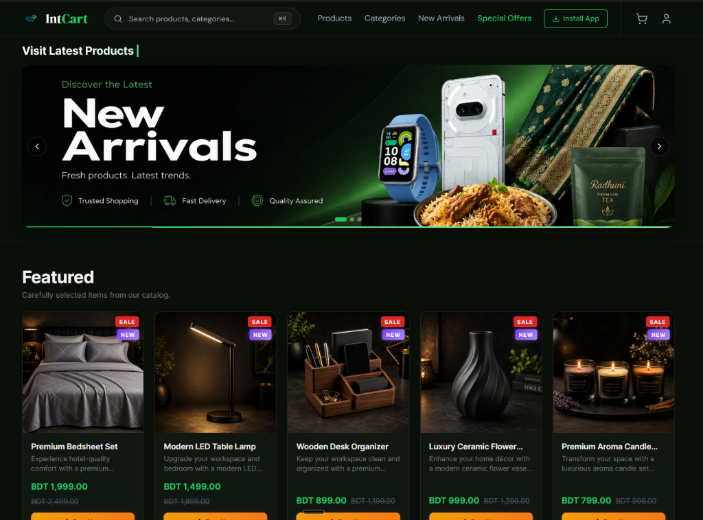

IntCart
A flagship production-grade e-commerce progressive web application with role-based access control, two-factor authentication, and ACID transaction-based checkout.

Overview
IntCart is a robust, full-stack e-commerce platform engineered to handle complex business logic, concurrent order processing, and administrative management at scale. Built to solve real-world problems faced by modern online retailers, the platform guarantees data integrity during checkout and offers a fully featured admin dashboard for operational control.
This project was built from the ground up to demonstrate my capability in architecting and deploying large-scale, secure, and highly performant web applications targeting production environments.
Technology Stack
Frontend
- Next.js (App Router)
- React & TypeScript
- Tailwind CSS
- Zustand (State Mgt)
Backend
- Next.js Server Actions
- Node.js
Database
- PostgreSQL
- Prisma ORM
Auth & Infra
- NextAuth.js & TOTP/2FA
- bcrypt
- Vercel, Resend, Cloudinary
- PWA Configured
Core Engineering Highlights
ACID Transaction Processing
To prevent overselling and data corruption, the checkout flow runs inside a Prisma interactive transaction. This ensures that inventory deduction, order record creation, and order status tracking either succeed atomically or roll back completely upon failure.
Historical Order Integrity
I designed a snapshot-based order architecture. When a customer places an order, the product's current title, price, and details are copied directly into the `OrderItem` record. This guarantees that future price updates or product deletions will never alter historical invoices.
Optimistic Locking & Concurrency Control
Implemented product version control to prevent race conditions when multiple users attempt to purchase the same low-stock item simultaneously, thereby preventing inventory overselling.
Role-Based Access Control (RBAC) & 2FA
Strict separation between Customer and Admin roles via NextAuth.js custom callbacks and middleware. Administrative actions require elevated privileges, and accounts can be secured via TOTP-based Two-Factor Authentication (2FA).
Incremental Static Regeneration (ISR)
Product catalog pages utilize Next.js ISR. This caches product pages statically on the edge (Vercel) for lightning-fast delivery while automatically revalidating data in the background upon product updates, avoiding stale content without sacrificing performance.
Comprehensive Admin Dashboard
Admins have full operational control over order progression, category hierarchies, product catalogs, offer banners, and review moderation. Real-time notifications alert admins of incoming orders instantaneously.
Customer Experience & PWA
Shoppers benefit from algorithmic features like "Recently Viewed Products", PDF invoice generation, seamless order tracking, and interactive review systems. The application is configured as a Progressive Web App (PWA), allowing mobile users to install it natively to their home screen.
Database Design
The schema relies on a highly normalized relational structure in PostgreSQL to ensure integrity. Key entities include:
- User & Address: Handles multi-address management and 2FA secrets per user.
- Product, Category & ProductImage: Supports hierarchical categories, rich descriptions, and multi-image galleries.
- Order, OrderItem & OrderStatusHistory: Maintains immutable records of purchases, prices at the time of sale, and tracks the lifecycle of an order (Pending → Processing → Shipped → Delivered).
- Review: Enforces strict purchase-verification rules before allowing users to rate products.
Performance Optimizations
- ISR & Static Caching: Next.js App router leverages aggressive edge caching.
- Server-Side Pagination: Admin dashboard tables and catalog lists use cursor and offset pagination to ensure <100ms response times regardless of database scale.
- Optimistic UI: Client-side state (Zustand) is updated immediately when adding items to the cart, providing a snappy, app-like feel.
- Efficient Prisma Queries: Solved N+1 query problems using Prisma's `include` and `select` efficiently across relations.
Security Measures
Security was a top priority throughout development. Forms are validated server-side using Zod to prevent malicious inputs. Payment and order state transitions strictly enforce Server-Side Validation. The RBAC model explicitly verifies user session claims on every protected API route, and the TOTP implementation shields accounts against credential stuffing.
Challenges & Solutions
The Challenge: Managing inventory race conditions during high-traffic checkout (e.g., flash sales).
The Solution: Implemented Prisma interactive transactions combined with row-level locking where applicable. By checking inventory strictly within the transaction boundaries and throwing explicit errors if stock is insufficient before finalizing the commit, I eliminated the possibility of negative inventory logic errors.
Lessons Learned
Building IntCart taught me the critical differences between a standard web app and a production-grade enterprise system. I learned that data architecture—specifically ensuring immutability for historical financial data (like orders and invoices)—is far more important than just making the UI look good. It also solidified my expertise in Next.js caching strategies, state management, and designing secure authentication flows.